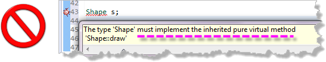

Using an Abstract Class
It is illegal to create an instance of an abstract class. Your compiler enforces this. You may, however, create ABC pointers or references as long as they point to, or refer to concrete objects which are derived from the ABC.

When you extend an abstract class, your derived class must override each and every abstract function in its base class, giving each a concrete implementation. The resulting derived class is a concrete class, and it can be used to create new objects.
Abstract classes thus provide a way of guaranteeing that an object of a given type will understand a given message. In that sense, they specify a set of responsibilities that a derived class mustfulfill.
 This course content is offered under a
CC
Attribution Non-Commercial license. Content in this course
can be considered under this license unless otherwise noted.
This course content is offered under a
CC
Attribution Non-Commercial license. Content in this course
can be considered under this license unless otherwise noted.